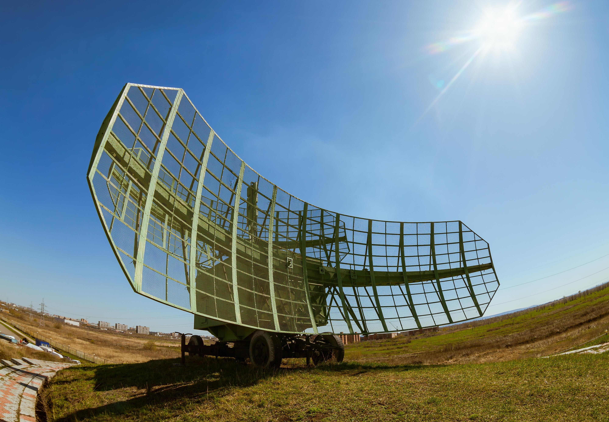

Building a better Building 20

I LIKE the idea of being able to take something as chaotic and ill-defined as creative genius, and build a machine to produce it. There's something satisfying about the mechanisms of a machine. Each part achieves its purpose because it has no choice but to be effective. From the governor on a steam engine to the control logic on a computer processor, each achieves its purpose because it has no choice but to. The centrifugal force on the governor pulls the arms upwards, closing the attached valve. The very values used to discriminate the different commands on a processor also act as control signals to determine the output.
Offices, cubicals, and false prophets
The idea of structuring our workspaces to maximise productivity is not exactly a new one. The notorious 'faceless, personality drained' cubical farms gave way to the much lambasted open office. Open offices are often cited as the solution to under-collaborating teams. Boosting the staff's collective intelligence. Encouraging serendipity via face to face communication. Open offices were heralded as the second coming of the collaboration gods but have been revealed to be a very false prophet. Many studies have shown that open offices actually decimate face to face communication. It turns out we don't want to be involved in those serendipitous conversations when deadlines hang like Damocles. They also lower productivity. Some claim output drops below a third of what is seen in quiet, private environments. They increase the use of sick leave and lower job satisfaction.

But, we moved away from individual offices and cubicles for a reason. It could be the false promises of the open plan priests. It could be the downward pressures of fiscally anxious management. It could be the image of an office buzzing with creative energy just feeling cool. Whatever it is, something about the human-matrix of interconnecting blocks we left behind dissatisfies.
Incubators, World War II, and Piano Tuners
Before we decide how to move forward, let us move back in time a little.
The year is 1942.
World War II is well and truly in full swing. That terrifying weapon that ended the war is still a while off. But another tool vital to the war effort is in active development. Radio detection and ranging, or RADAR to the rest of us. To keep up with the expanding military demand, the MIT RAD lab, the main radar research institute of the allied war effort, was hiring a massive influx of bright, new scientists. As is often the case with scientists, they needed office space to work. The pressure was rapidly mounting. MIT threw together a rather slapdash design in an afternoon. To the thronged MIT scientists, building 20 was two hundred and fifty thousand square feet across three floors of Cambridge fire code violating relief. It was meant to be temporary, plans were made to tear down the structure shortly following the war.

But, like so many other 'temporary' solutions, the 'shortly following' in 'shortly following the war' turned out to be 1998.
As a consequence of Japan's surrender, MIT made plans to demolish the makeshift office space. But, a new problem was on the horizon - the hugely successful G.I. bill had been signed in to law by then President Roosevelt in 1944. This provided for a number of benefits to returning veterans. Low-interest loans, unemployment compensation, and, critically, dedicated payments allowing returned servicemen to attend college. MIT was about to experience a great influx of students. Our new friend, Building 20, was repurposed to house science offices.
Then it housed science offices and a lab for nuclear science. Then it housed science offices, a lab for nuclear science, a linguistics department and a machine shop. Rather like a chaotic artist's workshop, or a startup running out of its' founder's parent's garage, it's exactly the sort of underdesigned mess that seems to exude creative genius. Exude genius it did. Within those flimsy walls, Building 20 housed a particle accelerator, a cell culture laboratory, and a piano repair facility. Noam Chomsky did much of his pioneering work in modern linguistics from Building 20. Nine Nobel prize-winning physicists worked in that building at some point. The accolades held by the once occupants of that messy, uncomfortable building are huge. One professor quipped "You might regard it as the womb of the institute. It is kind of messy, but by God it is procreative!". It was the magic incubator.
But what made Building 20 so effective? One factor was in fact how rough it was. It's status as a temporary structure meant that the occupants were able to use it in whatever way they saw appropriate. You need to run a cable from one room to another? Just bash a hole in the walls with a screwdriver. The building did not ever act as an obstacle for getting things done. Another crucial element was its' design. A series of small, private offices connected to a long spine (think of an F shape). A conversation could constantly be heard and engaged in those hallways, while privacy was available should it be desired. The F shaped structure held an additional benefit. Even if you were the sort to make a beeline straight for your private sanctuary (god knows, I am), you'd still need to move through the helter-skelter of the halls. This struck a kind of balance between the quiet concentration deep work requires, and the random muddle of collaboration.
In April 1999 MIT demolished Building 20. The 'Magical Incubator' of Massachusets was gone. It was rough, uncomfortable, and ugly. It was also a breeding ground for genius. The question is, can businesses capture some of that genius for themselves. Can we bottle the magic of the 'Magic Incubator'? David Dewane posits we can. He calls it the Eudaimonia machine. Perhaps, each company with sufficient resources and dedication can have their own Building 20.
Perhaps they can do it, and not break any local bylaws in the process.
Coffee, Books, and Collaboration

I won't spend too much time discussing the structure of the Eudaimonia Machine. There is plenty of information on the internet covering the design. But, I will say the Eudaimonia machine is an office design unlike any other. It consists of 5 areas, each with a different focus. The Eudaimonia Machine orders these areas from the streetside entrance of the building inward. If you wish to get to the rooms at the bottom of the stack, you must move through all the others above it. Those of us who prefer to squirrel themselves away in private little offices may do so. But first, we must move through the swarms known as "other people". Let's take a quick tour.
Entering from the street, we are met with the first area. The Gallery. This area showcases all the greatest work produced deeper in the machine. This inspires us. It perhaps even brings out a little of our competitive streak. With a head full of questions and a few ideas, we move deeper into the machine.
Next, we arrive at The Salon. The Salon is a place for freeform open communication. It consists of comfy seating (couches, soft furnishings) and a coffee bar. Maybe even a bar-bar. Here is the place that we are inspired by face to face communication. Whether it be about work, life, work-life, or anything else. Ideas generated here are carried to the other areas of the office for further examination. With a warm cup of coffee and a few more ideas, we move deeper into the machine.
The Library contains a permanent record of the good work produced by the denizens of the machine. Any books, magazines and other material contributing to the achievement of those tasks. Grand plans have sprung forth with ease thanks to the Gallery and the Salon. Here we find the information necessary to make those plans a reality. With an arm full of books and machinations for achieving our ideas, we move deeper into the machine.
Before we get into the real nitty-gritty of the new project percolating in our heads, we surely have a few low-intensity tasks to take care of. Maybe it's project planning or a bit of collaboration. The Office looks rather like a modern open plan office. Here is where the 'shallow work' occurs. It's all preparation for the depths we will plumb next. With our grand aspirations in sight and bated breath, we plumb the machine's greatest depths.
Here we are. The deepest part of the machine - The Chambers. These are individual, sound-proofed offices. This is where real deep work takes place. We have collaborated, we are appropriately provoked and inspired. We can now achieve the real nitty-gritty work required in our new project.
Great work awaits.